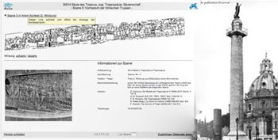

Die Trajanssäule ist eines der zentralen bilderreichen Monumente der antiken Kunstgeschichte. Mit Hilfe eines dedizierten Bildbrowsers kann sie bis ins Detail erschlossen werden, bleibt aber zugleich mit dem gesamten Inhalt von Arachne kontextualisiert. Insgesamt werden hier 3 große Fotokampagnen des DAI Rom sowie der Gipsabguß im Museo Civiltà dokumentiert.